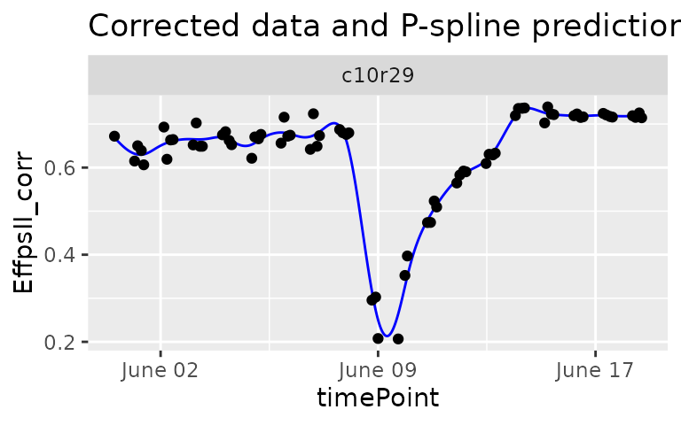
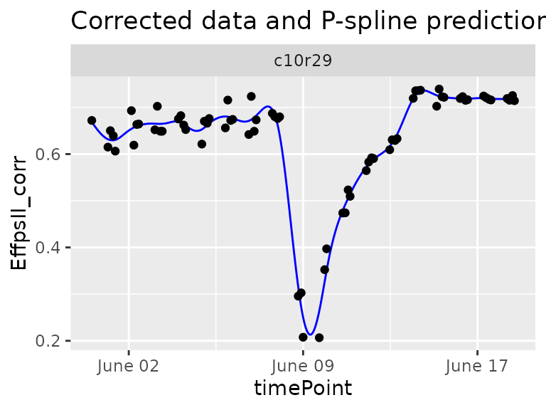
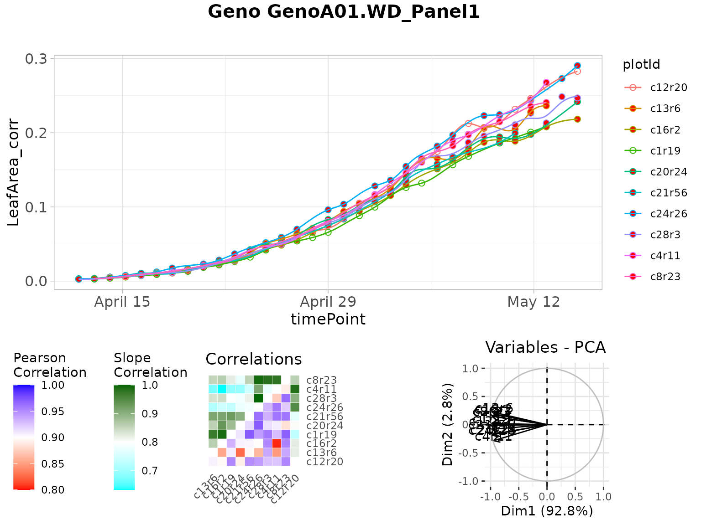

statgenHTP tutorial: 4. Outlier detection for series of observations
Emilie Millet, Bart-Jan van Rossum, Isabelle Sanchez, Nadine Hilgert, Fred van Eeuwijk
2021-09-29
Source:vignettes/vignettesSite/OutlierSerieObs_HTP.Rmd
OutlierSerieObs_HTP.RmdIntroduction
This document describes a protocol to detect outlying time courses, observed on a single plant or plot, with examples from various platforms. Traits may be measured directly or indirectly (through image analysis for example). The protocol considers time series on single traits. The protocol is applicable to raw data or data that were corrected spatially before (see statgenHTP tutorial: 3. Correction for spatial trends) or on raw data.
A nonparametric smoothing associated with a PCA
Each time course is modeled by a non-parametric smoothing spline with a fixed number of knots. This is a piecewise cubic polynomial ((Eubank 1999), (Eilers, Marx, and Durbán 2015)) fitted as a mixed model ((Currie and Durban 2002)).
![P-spline smoothing with 20 knots and a low penalty, from [@Hugelier2016]. The individual B-splines (with the correct coefficients) are shown (colored lines), as well as their sum representing the fit (thick black line).](figures/pspline.png)
P-spline smoothing with 20 knots and a low penalty, from (Hugelier, Devos, and Ruckebusch 2016). The individual B-splines (with the correct coefficients) are shown (colored lines), as well as their sum representing the fit (thick black line).
The estimates for the spline coefficients are then extracted per time course (typically per plant) and correlations between those coefficient vectors are calculated to identify outlying time courses, i.e., plants. An outlying time course will have low correlation to the majority of time courses. To support the analysis by correlations, a principal component analysis can be done on the plant (time course) by spline coefficient matrix. A PCA plot of the plant scores will show the outlying plants.
For P-splines in a mixed model, the smoothing coefficient is optimized by restricted maximum likelihood but the number of knots is chosen by the user.
Principal component analysis on smoothed time series to identify outlying series.
The function fitSpline() fits a P-spline per plant for the selected trait. The penalty (i.e. the amount of smoothing) will be chosen by REML and the number of knots can be determined by the user using knots. In P-spline, the knots are equally spaced and their number can be large. The user should also chose an appropriate minimum number of time points that should be in the data set per plant minNoTP. When a plant has less time points than the minimum, it will be skipped from the analysis.
The functions are illustrated with the three example data sets. For more information about the data, see statgenHTP tutorial: 1. Introduction.
Example 1
The data from the Phenovator platform have been corrected for spatial trends and time points outliers have been removed (see statgenHTP tutorial: 2. Outlier detection for single observations and statgenHTP tutorial: 3. Correction for spatial trends). At this stage, the cleaned and corrected data are used:
data(spatCorrectedVator)
# Fit P-splines using on a subset of genotypes.
subGenoVator <- c("G070", "G160", "G151", "G179", "G175", "G004", "G055")
fit.spline <- fitSpline(inDat = spatCorrectedVator,
trait = "EffpsII_corr",
genotypes = subGenoVator,
knots = 50)
# Extracting the tables of predicted values and P-spline coefficients
predDat <- fit.spline$predDat
coefDat <- fit.spline$coefDatThe object fit.spline contains the P-spline model coefficients (coefDat) and the predicted value (pred.value in the table below), i.e the values predicted using the P-spline model coefficients. Predictions are made on a denser grid of time points: the time points for prediction are calculated as the smallest gap between two time points divided by 9, so dividing the smallest gap in 10 segments. The object fit.spline also contains the first and second derivatives (deriv and deriv2 in the table below, see also statgenHTP tutorial: 5. Estimation of parameters from time courses).
| timeNumber | timePoint | pred.value | deriv | deriv2 | plotId | genotype |
|---|---|---|---|---|---|---|
| 0 | 2018-05-31 16:37:00 | 0.6697508 | -9e-07 | 0 | c10r29 | G160 |
| 800 | 2018-05-31 16:50:20 | 0.6690398 | -9e-07 | 0 | c10r29 | G160 |
| 1600 | 2018-05-31 17:03:40 | 0.6683303 | -9e-07 | 0 | c10r29 | G160 |
| 2400 | 2018-05-31 17:17:00 | 0.6676225 | -9e-07 | 0 | c10r29 | G160 |
| 3200 | 2018-05-31 17:30:20 | 0.6669164 | -9e-07 | 0 | c10r29 | G160 |
| 4000 | 2018-05-31 17:43:40 | 0.6662124 | -9e-07 | 0 | c10r29 | G160 |
Conversion to numerical time is required to fit P-splines. To keep the same time scale as in the original timePoint column, a numerical transformation of the time points is made using the first time point as origin (column timeNumber in the table above).
The numerical time can also be provided by the user using the option useTimeNumber = TRUE. It allows using thermal time or any other manual conversion. In this example, we provide a new column specified in timeNumber with time in hours since first measurement.
fit.splineNum <- fitSpline(inDat = spatCorrectedVator,
trait = "EffpsII_corr",
genotypes = subGenoVator,
knots = 50,
useTimeNumber = TRUE,
timeNumber = "timeNumHour")We can then visualize the P-spline predictions and first derivatives for a subset of genotypes or for a subset of plots.
plot(fit.spline,
genotypes = "G160")
plot(fit.spline,
plotIds = "c10r29",
plotType = "predictions")
plot(fit.spline,
plotIds = "c10r29",
plotType = "derivatives")
The object fit.spline also contains the values of the P-splines coefficients:
| obj.coefficients | plotId | type | genotype |
|---|---|---|---|
| 0.6980810 | c10r29 | timeNumber1 | G160 |
| 0.6694202 | c10r29 | timeNumber2 | G160 |
| 0.6427428 | c10r29 | timeNumber3 | G160 |
| 0.6279562 | c10r29 | timeNumber4 | G160 |
| 0.6286394 | c10r29 | timeNumber5 | G160 |
| 0.6474903 | c10r29 | timeNumber6 | G160 |
The coefficients are then used to tag suspect time courses with the function detectSerieOut(). This function performs a PCA on the coefficients (from data.frame coefDat) per genotype and calculates the pairwise angle between the plants in the PCA plot. Plants are tagged when the mean angle is above threshold (thrPca), see the lines reason = angle in the table below. The function also calculates the pairwise-correlation of the coefficients per genotype. Plants are tagged when the correlation is below a given threshold (thrCor), see the lines reason = mean corr in the table below. Finally the pairwise-ratios of the slopes of a linear model fitted through the spline coefficients are computed. Plants are tagged when the average pairwise-ratio is lower the a given threshold (thrSlope), see the lines reasion = slope in the table below.
For obvious reasons, the detection will only work when there are at least three replicates per genotype. Genotypes with less than three replicates will be skipped.
outVator <- detectSerieOut(corrDat = spatCorrectedVator,
predDat = predDat,
coefDat = coefDat,
trait = "EffpsII_corr",
genotypes = subGenoVator,
thrCor = 0.9,
thrPca = 30,
thrSlope = 0.7)| plotId | genotype | reason | value |
|---|---|---|---|
| c21r25 | G151 | mean corr | 0.8305035 |
| c21r25 | G151 | angle | 33.8868907 |
| c9r4 | G160 | mean corr | 0.7069584 |
| c9r4 | G160 | angle | 45.1419532 |
| c9r4 | G160 | slope | 0.6432851 |
| c3r43 | G055 | mean corr | 0.8445718 |
For this subset of genotypes, 2 plants were tagged as outliers:
- c21r25 and c9r4 had both low correlations and high angles. In addition c9r4 also had a low average ratio for the slope.
The outVator can be visualized by selecting genotypes. Here genotype G151 which has plant c21r25 tagged as outlier:
plot(outVator, genotypes = "G151")
The figure above contains:
- (top) A scatter plot of the trait value on the y-axis and time on the x-axis. Points are the raw or corrected data and lines are the P-spline predictions, with one color per plant (in legend). Filled dots represent outlying plants, open dots non-outlying plants.
- (bottom left) A matrix with in the bottom right the correlations of the plant scores as a heatmap. The scale is centered on 0.9 (the correlation threshold) to see at a glance the outlying plants with low correlations (usually correlation is high between plants). The top left of the matrix shows the average slopes as a heatmap. The scale is centered on 0.7 (the slope threshold) to see at a glance the outlying plants with low average slope (usually average slopes are high between plants).
- (bottom right) A PCA plot of the plant scores. Usually, all plants are grouped and the first axis explains most of the variation. When a plant is outlying, it will be located apart from the other plants on the second axis.
It is possible to visualize only the plants tagged for one or two reasons instead of all three. This can be done by specifying e.g. reason = slope for only visualizing plants tagged because of a low average slope. When doing so only the relevant plots will be shown. So in this case only the upper left part of the correlation plot and no PCA plot.
plot(outVator,
genotypes = "G151",
reason = "slope")
When numerical time was used to fit the splines, it can be used also to plot the outliers using the option useTimeNumber = TRUE and providing the column name in timeNumber.
plot(outVator,
genotypes = "G151",
useTimeNumber = TRUE,
timeNumber = "timeNumHour")Finally, the outlying plants can be removed from the data set…
spatCorrectedVatorOut <- removeSerieOut(dat = spatCorrectedVator,
serieOut = outVator)
# Check for time series outliers in data from which individual outlying
# observations were already removed and to which a spatial adjustment has been applied
head(spatCorrectedVator[spatCorrectedVator$plotId == "c21r25",
c("EffpsII_corr", "EffpsII")])
#> EffpsII_corr EffpsII
#> 2428 0.6985353 0.694
#> 5244 0.4687165 0.464
#> 10892 0.8160168 0.819
#> 12315 0.7479606 0.749
#> 15156 0.5637949 0.563
#> 16581 NA NA
# Check the same value in the new corrected data.frame
head(spatCorrectedVatorOut[spatCorrectedVatorOut$plotId == "c21r25",
c("EffpsII_corr", "EffpsII")])
#> EffpsII_corr EffpsII
#> 2428 NA 0.694
#> 5244 NA 0.464
#> 10892 NA 0.819
#> 12315 NA 0.749
#> 15156 NA 0.563
#> 16581 NA NA… and from the predictions.
fit.splineOut <- removeSerieOut(fitSpline = fit.spline,
serieOut = outVator)
fit.splineNumOut <- removeSerieOut(fitSpline = fit.splineNum,
serieOut = outVator)It is possible to remove only the plants tagged for one or two reasons instead of all three. This can be done by specifying e.g. reason = slope for only removing plants tagged because of a low average slope.
spatCorrectedVatorOut <- removeSerieOut(dat = spatCorrectedVator,
serieOut = outVator,
reason = "slope")Impact of the number of knots on the smoothing
For one plant of the same data set, we fit the P-spline with 10 or 50 knots and visualize the predictions to compare the smoothness. We advise the user to perform tests of the number of knots on a subset of plants before running the function on all plants.
With 10 knots:
sp10k <- fitSpline(inDat = spatCorrectedVator,
trait = "EffpsII_corr",
plotIds = "c10r29",
knots = 10)
plot(sp10k)
The predicted curve is very smooth and, in this case, it is not following precisely the real data curve shape. When comparing the plants of a same genotype with this curve shape we might not identify the outlying plant.
With 50 knots:
sp50k <- fitSpline(inDat = spatCorrectedVator,
trait = "EffpsII_corr",
plotIds = "c10r29",
knots = 50)
plot(sp50k)
The predicted curve is less smooth and follows the actual curve shape. This seems to be a good setting to detect strange curve shape among the replicates of a genotype.
Example 2
The data from the PhenoArch platform have been corrected for spatial trends and individually outlying observations have been removed (see statgenHTP tutorial: 2. Outlier detection for single observations and statgenHTP tutorial: 3. Correction for spatial trends).
data(spatCorrectedArch)
subGenoArch <- c("GenoA01", "GenoA02", "GenoA34", "GenoA04", "GenoB01", "GenoB02", "GenoB07")
fit.splineArch <- fitSpline(inDat = spatCorrectedArch,
trait = "LeafArea_corr",
genotypes = subGenoArch,
knots = 30,
minNoTP = 18)
predDatArch <- fit.splineArch$predDat
coefDatArch <- fit.splineArch$coefDat
plot(fit.splineArch,
plotIds = "c11r9",
plotType = "predictions")
plot(fit.splineArch,
plotIds = "c11r9",
plotType = "derivatives")
Here, the geno.decomp option is also to split the plants of each genotype those under well watered and water deficit conditions. The outlier detection is run per treatment with a narrow angle threshold
outArch <- detectSerieOut(corrDat = spatCorrectedArch,
predDat = predDatArch,
coefDat = coefDatArch,
trait = "LeafArea_corr",
genotypes = subGenoArch,
thrCor = 0.9,
thrPca = 10,
thrSlope = 0.8,
geno.decomp = "geno.decomp")| plotId | genotype | geno.decomp | reason | value |
|---|---|---|---|---|
| c18r12 | GenoA02 | WW_Panel1 | slope | 0.7772333 |
| c12r6 | GenoA04 | WD_Panel1 | slope | 0.7347396 |
| c3r2 | GenoA04 | WW_Panel1 | slope | 0.7716739 |
| c7r2 | GenoB07 | WD_Panel2 | angle | 10.1156009 |
| c7r2 | GenoB07 | WD_Panel2 | slope | 0.6857633 |
plot(outArch, genotypes = "GenoB07", geno.decomp = "WD_Panel2")
spatCorrectedArchOut <- removeSerieOut(dat = spatCorrectedArch,
serieOut = outArch)
# Check for time series outliers in data from which individual outlying
# observations were already removed and to which a spatial adjustment has been applied
head(spatCorrectedArch[spatCorrectedArch$plotId=="c7r2",
c("LeafArea_corr", "LeafArea")])
#> LeafArea_corr LeafArea
#> 1352 0.003266173 0.002829922
#> 2790 0.004797373 0.004433653
#> 4460 0.006359950 0.005812666
#> 6128 0.008256599 0.007868383
#> 7800 0.010844756 0.010250315
#> 9285 0.012058584 0.012271859
# Check the same value in the new corrected data.frame
head(spatCorrectedArchOut[spatCorrectedArchOut$plotId=="c7r2",
c("LeafArea_corr", "LeafArea")])
#> LeafArea_corr LeafArea
#> 1352 NA 0.002829922
#> 2790 NA 0.004433653
#> 4460 NA 0.005812666
#> 6128 NA 0.007868383
#> 7800 NA 0.010250315
#> 9285 NA 0.012271859Example 3
The data from the RootPhAir platform have not been corrected for spatial trends but individually outlying observations have been removed (see statgenHTP tutorial: 2. Outlier detection for single observations).
subGenoRoot <- c( "2", "6", "8", "9", "10", "520", "522")
fit.splineRoot <- fitSpline(inDat = noCorrectedRoot,
trait = "tipPos_y",
knots = 10,
genotypes = subGenoRoot,
minNoTP = 0,
useTimeNumber = TRUE,
timeNumber = "thermalTime")
predDatRoot <- fit.splineRoot$predDat
coefDatRoot <- fit.splineRoot$coefDat
row.names(coefDatRoot) <- 1:nrow(coefDatRoot)
plot(fit.splineRoot,
genotypes = "2")
outRoot <- detectSerieOut(corrDat = noCorrectedRoot,
predDat = predDatRoot,
coefDat = coefDatRoot,
trait = "tipPos_y",
genotypes = subGenoRoot,
thrCor = 0.9,
thrPca = 20,
thrSlope = 0.7)
plot(outRoot,
genotypes = "10")
noCorrectedRootOut <- removeSerieOut(dat = noCorrectedRoot,
serieOut = outRoot)
# Check one value annotated as outlier in the original corrected data.frame
head(noCorrectedRoot[noCorrectedRoot$plotId == "A_29_2", "tipPos_y"])
#> [1] 5.157143 5.157143 5.157143 5.171429 6.785714 6.585714
# Check the same value in the new corrected data.frame
head(noCorrectedRootOut[noCorrectedRootOut$plotId == "A_29_2", "tipPos_y"])
#> [1] 5.157143 5.157143 5.157143 5.171429 6.785714 6.585714Detection of outlier plants on a multi-criteria basis, with expert rules
An outlier plant is defined as a biological replicate deviating from the overall distribution of plants on a multi-criteria basis, regardless of the quality of measurements. Detecting outlier plants can be done by monitoring a single criterion, such as plant height or biomass. In this case, a procedure for detecting outlying series of observations should be used, as discussed in the previous sections. But taking into account only one criterion can sometimes be restrictive in deciding whether a plant is outlier or not. A multi-criteria approach will then be more relevant. A multi-criteria method considers several traits jointly, with rules set by experts depending on the species. We describe below the approach followed on a maize experiment, see (Alvarez Prado et al. 2019).
Rules in the case of maize
We consider two categories of potentially outlier plants, namely apparently too small or too large plants. For the detection of unexpectedly small plants with likely physiological disorders, the progression of leaf stages was considered in addition to the time course of shoot biomass. Indeed, leaf appearance rate carries a non-redundant information compared with biomass (confirmed by standard correlation calculations). It usually presents a low plant-to-plant variability except in case of severe disorders, and is relatively insensitive to environmental cues other than temperature. For the detection of unexpectedly large plants, potentially associated with wrong genotype identification, combining plant height and biomass can result in an efficient identification.
Statistical modelling: a mixed model at a given time (defined by the expert)
Each of the selected traits was measured (or estimated) at a specific time (for example 24 d20°C for the PhenoArch data set), time just before the beginning of the differentiation of the two watering treatments. This allows to have more replicates per genotype. It also reduces the dimensionality of the time courses to only one point, which will simplify the statistical models to be implemented later.
Schematic representation of a multi-trait approach for detection of outlier plants (case of maize), from Alvarez Prado et al. (2019).
As shown above, traits are modeled with a mixed model that considers fixed experiment (Env) effect and random genotypic (G), replicate (R) and spatial (C) effects. The model can be fitted with the SpATS R-package, (Rodríguez-Álvarez et al. (2018)). Residuals (deviations) can be directly computed from the fitting, with a confidence interval. Plants, whose deviations for the criteria of leaf appearance rate and biomass are less than the lower bound of this interval, are considered as outlier small plants. Plants, whose deviations for the criteria of plant height and biomass are greater than the upper bound of the confidence interval, are considered as outlier large plants.
Implementation in statgenHTP
Mixed models are fitted with the R-package SpATS through the use of the detectSingleOutMaize function, which was developed specifically for the maize data, as described above. This function fits a mixed model for each parameter, and tests whether the residual deviations are lower (for the criteria considered for small plants) or higher (for the criteria considered for big plants) than a specified threshold.
phenoTParch <- createTimePoints(dat = PhenoarchDat1,
experimentName = "Phenoarch",
genotype = "Genotype",
timePoint = "Date",
plotId = "pos",
rowNum = "Row",
colNum = "Col")
test2 <- detectSingleOutMaize(phenoTParch,
timeBeforeTrt = "2017-04-27",
trait1 = "Biomass",
trait2 = "PlantHeight",
trait3 = "phyllocron")The detectSingleOutMaize returns a list of 3 elements :
- modDat: a data.frame with the used data set, the fitted values and residuals calculated by the models, and the plants flagged as outlier
- smallPlants: a data.frame of the “small” plants detected as outliers
- bigPlants: a data.frame of the “big” plants detected as outliers
| timePoint | plotId | genotype | Scenario | population | |
|---|---|---|---|---|---|
| NA | NA | NA | NA | NA | NA |
| 5811 | 2017-04-27 | c5r3 | GenoA06 | WW | Panel1 |
| 8476 | 2017-04-27 | c6r57 | GenoA57 | WW | Panel1 |
| 8594 | 2017-04-27 | c7r2 | GenoB07 | WD | Panel2 |
| 8986 | 2017-04-27 | c7r18 | GenoB11 | WD | Panel2 |
| 17106 | 2017-04-27 | c12r50 | GenoA30 | WD | Panel1 |
References
Alvarez Prado, Santiago, Isabelle Sanchez, Llorenç Cabrera-Bosquet, Antonin Grau, Claude Welcker, François Tardieu, and Nadine Hilgert. 2019. “To Clean or Not to Clean Phenotypic Datasets for Outlier Plants in Genetic Analyses?” Journal of Experimental Botany 70 (15): 3693–8. https://doi.org/10.1093/jxb/erz191.
Currie, I D, and M Durban. 2002. “Flexible Smoothing with P-Splines: A Unified Approach.” Statistical Modelling 2 (4): 333–49. https://doi.org/10.1191/1471082x02st039ob.
Eilers, Paul H. C., Brian D. Marx, and Maria Durbán. 2015. “Twenty Years of P-Splines.” Statistics and Operations Research Transactions 39 (2): 149–86.
Eubank, Randall L. 1999. Nonparametric Regression and Spline Smoothing. Statistics: A Series of Textbooks and Monographs. CRC Press.
Hugelier, S., O. Devos, and C. Ruckebusch. 2016. “Chapter 14 - a Smoothness Constraint in Multivariate Curve Resolution-Alternating Least Squares of Spectroscopy Data.” In Resolving Spectral Mixtures, edited by Cyril Ruckebusch, 30:453–76. Data Handling in Science and Technology. Elsevier. https://doi.org/https://doi.org/10.1016/B978-0-444-63638-6.00014-0.
Rodríguez-Álvarez, María, Martin P. Boer, Fred van Eeuwijk, and Paul H. C. Eilers. 2018. “Correcting for Spatial Heterogeneity in Plant Breeding Experiments with P-Splines.” Spatial Statistics 23 (October): 52–71. https://doi.org/10.1016/j.spasta.2017.10.003.